Portfolio
Un lavoro reale e tredici cose che ci siamo costruiti da soli.
Guarda com’è fatto, poi decidi. Qui sotto trovi tutto etichettato per quello che è: un lavoro vero, dodici demo di settore, uno strumento che usiamo per lavorare — detto chiaro, non a mezza bocca.
01 / Lavoro reale
Il museo della Tonnara di Flumentorgiu
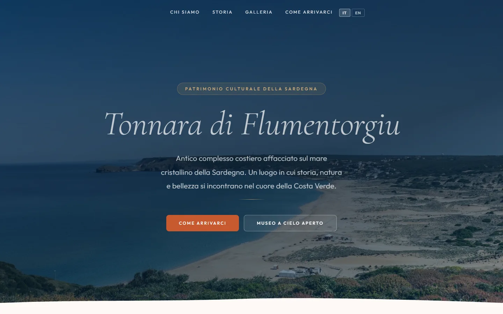
Museo e sito culturale, Arbus
Tonnara di Flumentorgiu
Il sito del complesso della tonnara per l’Associazione Porto Palma: la storia della tonnara e della pesca, le informazioni per la visita, le immagini dell’archivio.
tonnaradiflumentorgiu.it (si apre in una nuova scheda)
02 / Demo di settore
Dodici demo. Apri quella del tuo mestiere.
Sono siti completi e navigabili: menu, foto, form, mappa, tutto funzionante. Quello che non è vero sono i locali. Nomi, piatti, prezzi e storie sono inventati da noi per avere un sito realistico su cui lavorare. Se apri quella del tuo settore, vedi esattamente il tipo di sito che ti consegneremmo.
13 progetti
-
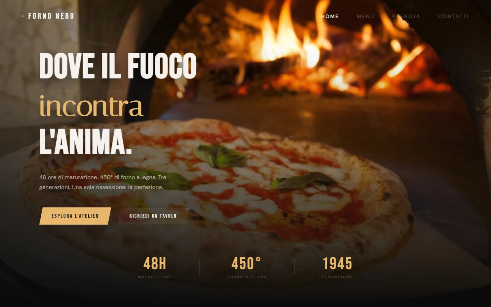
Demo di settore — locale non realePizzeria, ambientata a Cagliari
Forno Nero
Menu delle pizze con gli allergeni indicati piatto per piatto, racconto delle generazioni della famiglia su una linea del tempo, pulsante WhatsApp che apre la chat con l’ordine già impostato.
Se hai una pizzeria, guarda come si scorre il menu con il pollice mentre cammini.
Apri la demo (si apre in una nuova scheda)
-
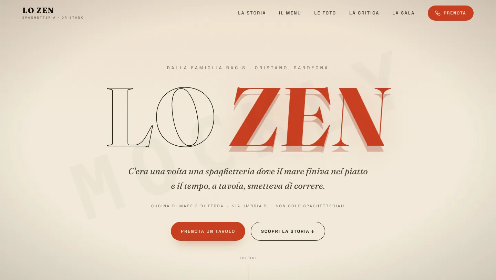
Demo di settore — locale non realeSpaghetteria, ambientata a Oristano
Lo Zen
Menu con foto piatto per piatto, pagina dedicata alla storia del locale, recensioni raccolte in un’unica pagina, pulsante WhatsApp per prenotare.
Se il tuo punto di forza è la storia più che il menu, guarda dove la mettiamo: prima ancora del cibo.
Apri la demo (si apre in una nuova scheda)
-
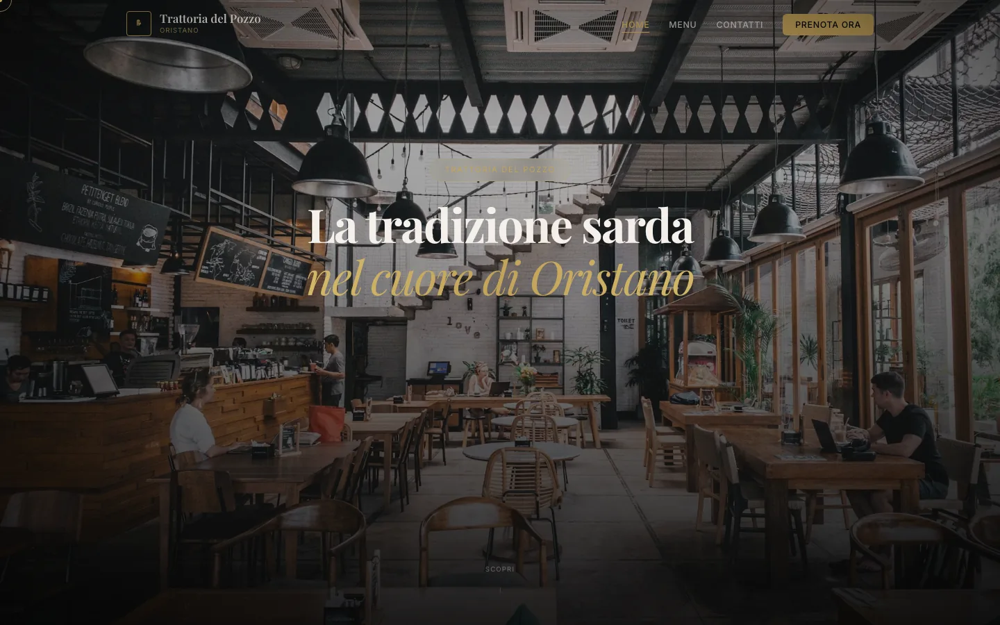
Demo di settore — locale non realeTrattoria, ambientata a Oristano
Trattoria da Gabriele
Menu con il prezzo accanto a ogni piatto, galleria fotografica della sala, recensioni dei clienti, banner cookie conforme al GDPR.
Se lavori con i prezzi in vista, guarda come restano leggibili anche su schermo piccolo.
Apri la demo (si apre in una nuova scheda)
-
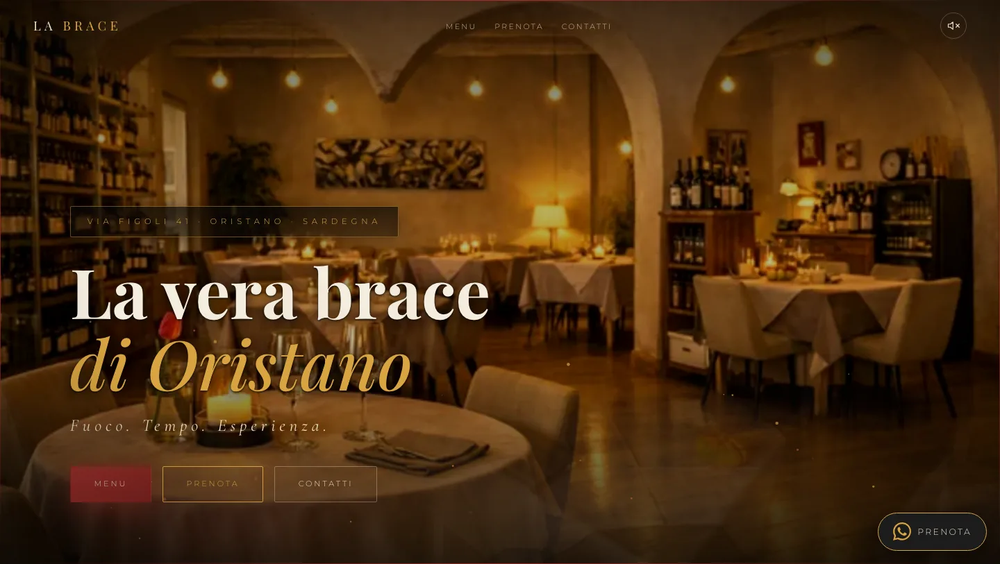
Demo di settore — locale non realeRistorante, ambientato a Oristano
La Brace
Menu diviso per capitoli invece che in un’unica lista lunga, effetto parallax nelle foto di sala, recensioni e carta dei vini.
Se il menu è lungo, guarda come lo spezziamo in capitoli invece di farlo scorrere all’infinito.
Apri la demo (si apre in una nuova scheda)
-
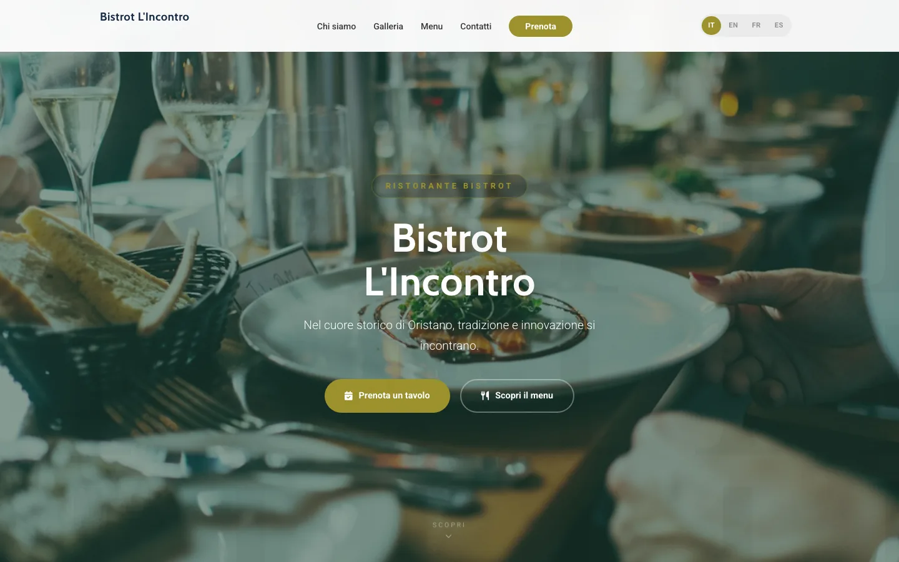
Demo di settore — locale non realeBistrot, ambientato a Oristano
Ta Matete
Sito in quattro lingue (italiano, inglese, francese, spagnolo), pensato per chi lavora molto con turisti.
Se hai clienti stranieri, guarda come cambia lingua senza cambiare pagina.
Apri la demo (si apre in una nuova scheda)
-
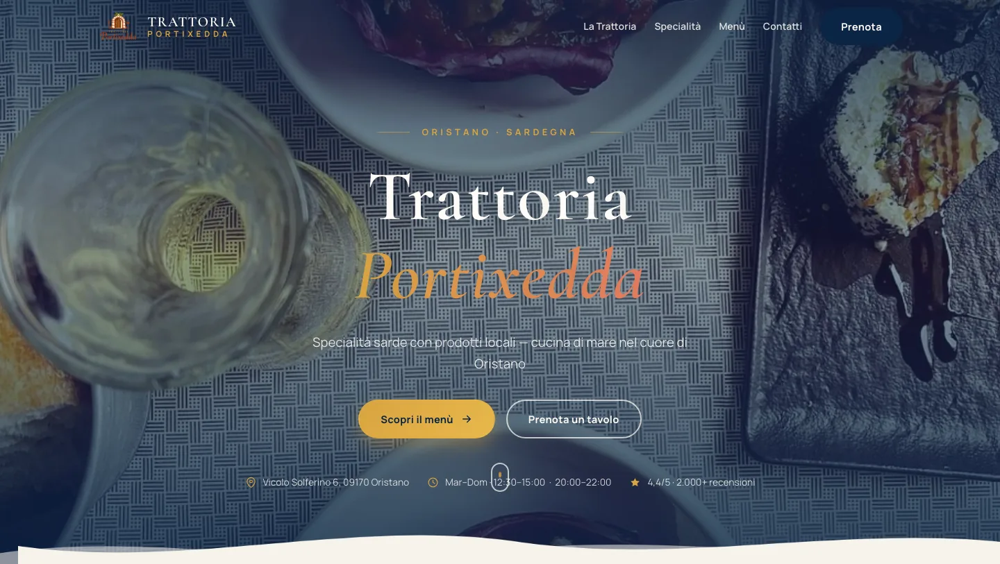
Demo di settore — locale non realeTrattoria di pesce, ambientata a Oristano
Trattoria Portixedda
Punteggio e numero di recensioni in evidenza già nell’hero, orari e indirizzo sempre visibili, prenotazione con TheFork.
Se le recensioni sono il tuo punto di forza, guarda dove le mettiamo: prima ancora di scorrere la pagina.
Apri la demo (si apre in una nuova scheda)
-
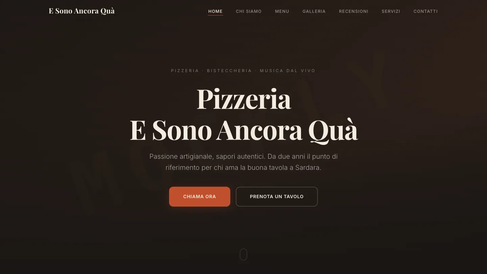
Demo di settore — locale non realePizzeria e bisteccheria, ambientata a Sardara
E Sono Ancora Quà
Menu diviso fra pizza e carne, sezione eventi con musica dal vivo, pulsanti diretti per chiamare o prenotare.
Se offri più di una cosa (pizza e carne, in questo caso), guarda come restano due menu distinti invece di uno confuso.
Apri la demo (si apre in una nuova scheda)
-
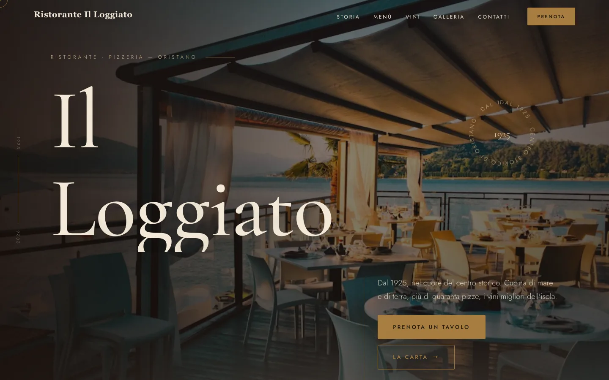
Demo di settore — locale non realeRistorante e pizzeria storico, ambientato a Oristano
Cocco & Dessì
Carta dei vini filtrabile per categoria, oltre quaranta pizze in menu, una storia che parte dal 1925.
Se hai una carta vini lunga, guarda come si filtra invece di scorrerla tutta.
Apri la demo (si apre in una nuova scheda)
-
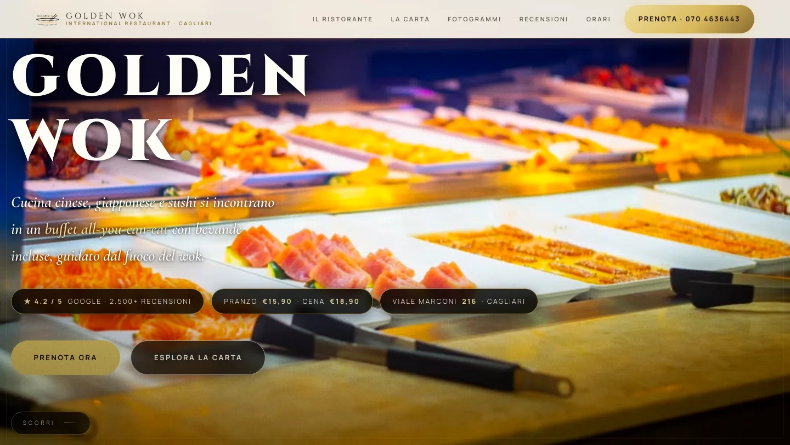
Demo di settore — locale non realeRistorante buffet asiatico, ambientato a Cagliari
Golden Wok
Prezzi diversi per pranzo e cena mostrati subito, punteggio Google in evidenza, indirizzo e galleria fotografica del buffet.
Se il prezzo cambia in base all’orario, guarda come lo mettiamo chiaro fin dall’inizio, senza farlo scoprire al tavolo.
Apri la demo (si apre in una nuova scheda)
-
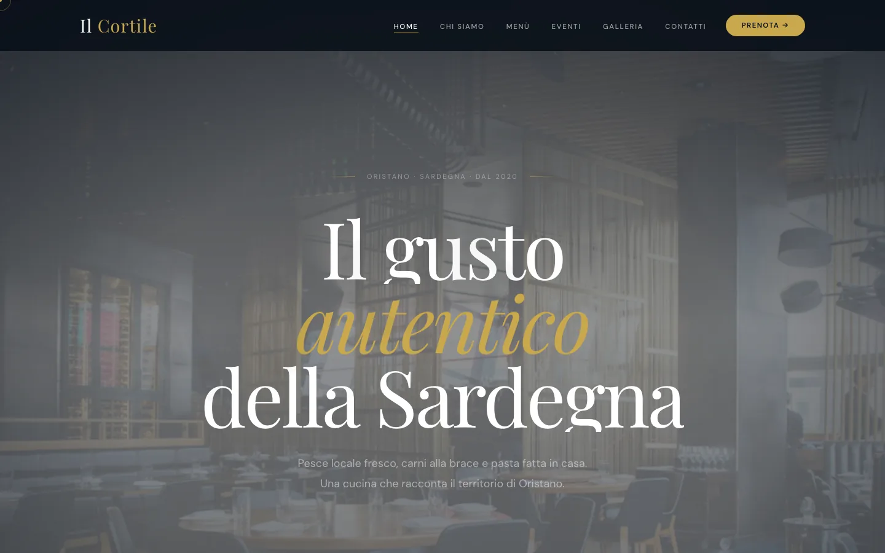
Demo di settore — locale non realeRistorante con cerimonie, ambientato a Oristano
Al PeCo
Sezione dedicata a cerimonie ed eventi con form per richiedere un preventivo, prenotazione tramite TheFork.
Se oltre ai coperti normali organizzi anche eventi, guarda come teniamo le due cose separate senza far sparire l’una nell’altra.
Apri la demo (si apre in una nuova scheda)
-
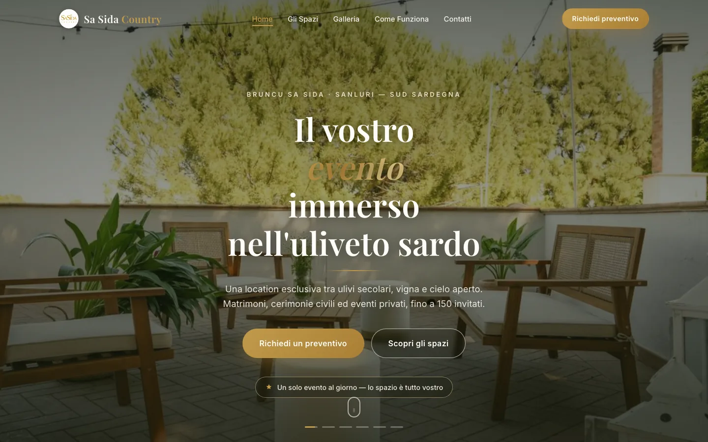
Demo di settore — locale non realeLocation per matrimoni ed eventi
SaSida Country
Video di apertura a tutto schermo, galleria dedicata ai matrimoni, form preventivo per gli sposi.
Guarda quanto pesa un video in apertura e come si fa perché non blocchi il telefono.
Apri la demo (si apre in una nuova scheda)
-
Anteprima su richiesta
Demo di settore — in sviluppoRistorante di pesce, ambientato a Oristano
Trattoria Da Egisto
Ancora in costruzione: non ha un link pubblico da aprire, ma la trovi comunque qui perché fa parte del lavoro fatto.
Se vuoi vederla prima che sia online, scrivicelo su WhatsApp.
Anteprima su richiesta, nessun link pubblico
-
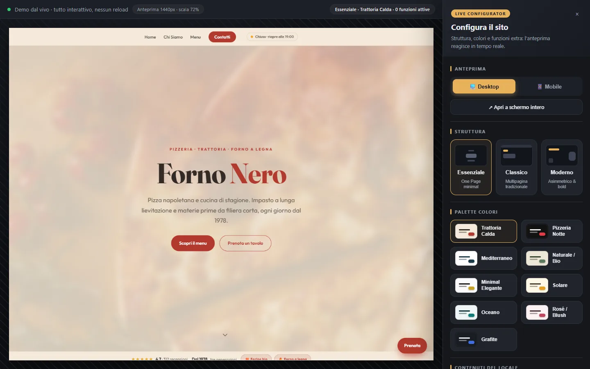
Strumento interno — non è il sito di un localeStrumento che usiamo noi
Live Configuratore
Un pannello che mostra le modifiche in tempo reale e genera un link condivisibile. È quello che ti manda l’anteprima del tuo sito mentre lo stiamo facendo: apri il link dal telefono in sala e vedi le correzioni man mano che le facciamo.
Perché è qui: è il motivo per cui al passo 4 ti arriva un link e non un PDF.
Apri lo strumento (si apre in una nuova scheda)
Non c’è la demo del tuo mestiere?
Scrivici che lavoro fai. Se una demo vicina c’è, ti mandiamo il link. Se non c’è, ti diciamo quale delle due assomiglia di più a quello che ti serve, e perché.